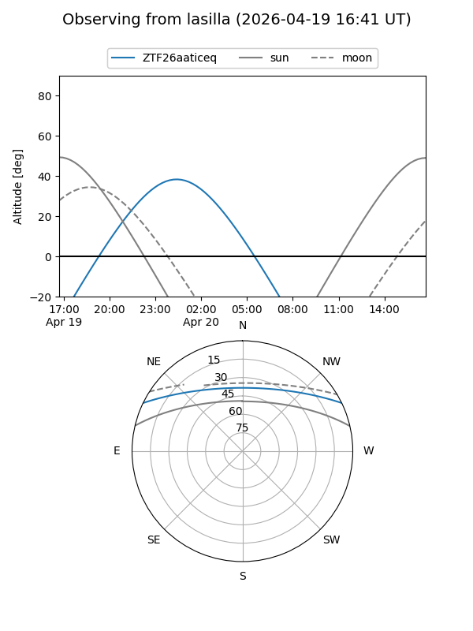
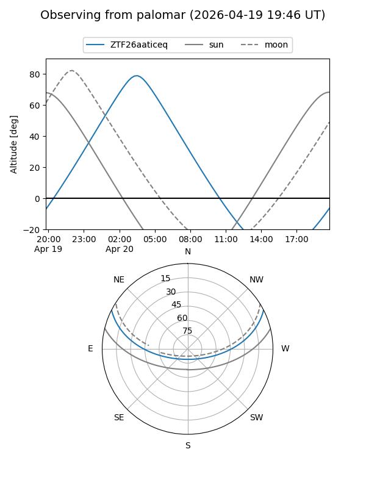

ZTF26aaticeq
Target ZTF26aaticeq at 2026-04-20 04:29
Aliases and brokers:
FINK: link
Lasair: link
ALeRCE: link
alt names
ZTF26aaticeq (ztf,fink_ztf)
Coordinates:
equatorial (ra, dec) = 142.9031,+22.47620
equatorial (HMS+DMS) = 09:31:36.75,+22:28:34.31
galactic (l, b) = (207.3481,+44.70202)
Flags:
Photometry:
last ztfg=20.03
1 ztfg detections
Lightcurve
Visibility


Additional plots